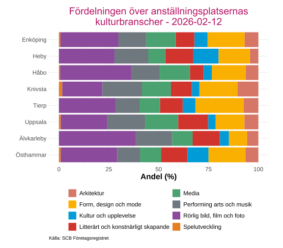
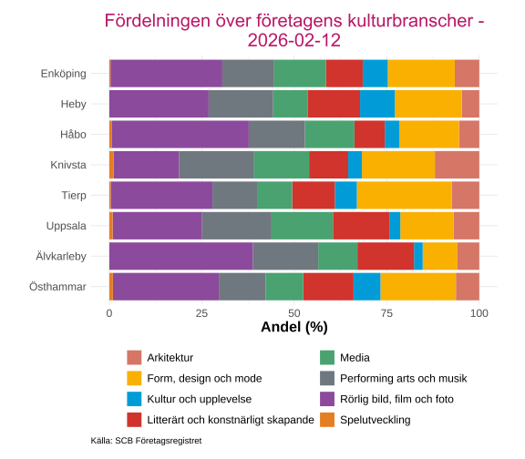

Organisationer
Inledning
Denna rapport undersöker organisationer och sysselsättning inom kultursektorn i Uppsala län. Syftet är att ge en övergripande bild av kulturarbetsmarknaden genom att analysera företagsstruktur, sysselsättning och kulturskaparnas förutsättningar i länet. Genom att kombinera information om företag, arbetsställen, sysselsättning och kulturskapare erbjuds en mångfacetterad förståelse av kultursektorns ekonomiska och organisatoriska struktur i Uppsala län.
Alla interaktiva grafer kan laddas ned genom att trycka på  . Då sparas just den bild som visas, med exempelvis den valda regionen. Genom att dubbelklicka på kommunnamn i grafens legend så zoomas den kommunen in för en mer detaljerad vy(flera kan väljas samtidigt).
. Då sparas just den bild som visas, med exempelvis den valda regionen. Genom att dubbelklicka på kommunnamn i grafens legend så zoomas den kommunen in för en mer detaljerad vy(flera kan väljas samtidigt).
Sysselsättning kolada
Avsnittet beskriver andelen sysselsatta i åldern 15-74 år inom kulturella och personliga tjänster m.m. (SNI-kod R, S, T och U). Andelen beräknas som antalet sysselsatta inom dessa näringsgrenar i relation till det totala antalet sysselsatta.
Med sysselsatta avses personer som under november månad haft löneinkomst från anställning eller inkomst från aktiv näringsverksamhet. Uppgifterna redovisas både utifrån arbetsställets geografiska belägenhet och utifrån individens bostadsort. Statistiken gör det därmed möjligt att belysa eventuella skillnader mellan var arbetet utförs och var de sysselsatta är bosatta.
Data är hämtat från Rådet för främjande av kommunala analyser (2025) som hänvisar vidare till Statistiska centralbyrån (SCB) (2025a).

Ladda ner
{kind=link}

Ladda ner
{kind=link}

Ladda ner
{kind=link}

Ladda ner
{kind=link}

Ladda ner
{kind=link}

Ladda ner
{kind=link}

Ladda ner
{kind=link}

Ladda ner
{kind=link}
Kvinnor har en högre andel sysselsatta inom kulturella och personliga tjänster än män i alla kommuner i länet, oavsett om statistiken baseras på arbetsställets eller bostadens belägenhet. Skillnaderna mellan arbetsställets och bostadens belägenhet är mycket små inom kommunerna. Detta tyder på att pendlingen över kommungränserna för personer som arbetar inom kulturella och personliga tjänster är begränsad, eller att in- och utpendling för dessa verksamheter är relativt balanserad.
Östhammar är den kommun som har lägst andel för bägge könen, medan Håbo, Knivsta och Uppsala kommun har de högsta andelarna. Skillnaderna mellan könen är som minst i Uppsala kommun och störst i Heby och Älvkarleby.
Företagsregistret
I Statistiska centralbyrån (SCB) (2025b) finns Sveriges alla företag, myndigheter, organisationer och deras arbetsställen. Registret uppdateras kontinuerligt med uppgifter från Skatteverket, Bolagsverket och SCB:s egna undersökningar och utredningar.
Klassificeringen av arbetsställen/företag verksamhet sker enligt Standard för svensk näringsgrensindelning (SNI), vilken är den officiella svenska näringsgrensstandarden och fastställs av Statistiska centralbyrån (SCB). SNI bygger på EU-standarden NACE och används primärt för statistiska ändamål, exempelvis för att möjliggöra jämförbarhet mellan branscher, över tid och mellan länder. I denna rapport används den senaste versionen, SNI 2025.
Urvalet av verksamheter som klassas som kulturverksamheter baseras på utvalda SNI-koder, i enlighet med SCB:s dokumentation och tidigare tillämpningar av näringsgrensindelningen inom kulturstatistik (Statistiska centralbyrån (SCB) (2025c)). Endast arbetsställen vars huvudsakliga verksamhet faller inom dessa koder inkluderas i analysen.
Mer information om företagsregistret finns här SCB företagsregistret.
Centrala begrepp
Företag avser hela den juridiska enheten (JE) och identifieras med ett person-/organisationsnummer. Ett företag kan bestå av ett eller flera arbetsställen.
Arbetsställe är en fysisk plats där verksamhet bedrivs. Ett företag kan ha flera arbetsställen, till exempel olika butiker i olika städer, men alla hör till samma företag.
Exempel från SBC: Företaget “Svensk Bil AB” kan ha sitt huvudkontor i Stockholm och verkstäder i Örebro, Skellefteå och Malmö. Då är “Svensk Bil AB” företaget och huvudkontoret samt verkstäderna är arbetsställen.
Branscher som klassas inom vara verksamma inom kultur (SNI 2025)
- 13100: Garntillverkning (Form, design och mode)
- 13200: Vävnadstillverkning (Form, design och mode)
- 13960: Vävnadstillverkning (Form, design och mode)
- 23999: Vävnadstillverkning (Form, design och mode)
- 13300: Blekning, färgning och annan textilberedning (Form, design och mode)
- 13910: Tillverkning av trikåväv (Form, design och mode)
- 13920: Sömnad av gardiner, sängkläder och linnevaror (Form, design och mode)
- 13960: Sömnad av gardiner, sängkläder och linnevaror (Form, design och mode)
- 13930: Tillverkning av mattor (Form, design och mode)
- 13950: Tillverkning av bondad duk (Form, design och mode)
- 14240: Tillverkning av läder- och skinnkläder (Form, design och mode)
- 14210: Tillverkning av andra gång- och ytterkläder (Form, design och mode)
- 14100: Tillverkning av andra gång- och ytterkläder (Form, design och mode)
- 14220: Tillverkning av underkläder, skjortor och blusar (Form, design och mode)
- 14100: Tillverkning av underkläder, skjortor och blusar (Form, design och mode)
- 14210: Tillverkning av underkläder, skjortor och blusar (Form, design och mode)
- 14290: Tillverkning av andra beklädnadsvaror och tillbehör (Form, design och mode)
- 14100: Tillverkning av andra beklädnadsvaror och tillbehör (Form, design och mode)
- 14210: Tillverkning av andra beklädnadsvaror och tillbehör (Form, design och mode)
- 14220: Tillverkning av andra beklädnadsvaror och tillbehör (Form, design och mode)
- 14240: Tillverkning av pälsvaror (Form, design och mode)
- 14100: Tillverkning av strumpor (Form, design och mode)
- 14100: Tillverkning av andra trikåvaror (Form, design och mode)
- 15110: Garvning och annan läderberedning; pälsberedning (Form, design och mode)
- 15120: Tillverkning av reseffekter, handväskor, sadel- och seldon m. m. (Form, design och mode)
- 15200: Tillverkning av skodon (Form, design och mode)
- 18110: Tryckning av dagstidningar (Media)
- 18121: Tryckning av tidskrifter (Media)
- 18122: Tryckning av böcker och övriga trycksaker (Media)
- 13300: Tryckning av böcker och övriga trycksaker (Media)
- 18130: Grafiska tjänster före tryckning (prepress/premedia) (Media)
- 18140: Bokbindning och andra tjänster i samband med tryckning (Media)
- 23130: Tillverkning av buteljer, glasförpackningar och husgeråd av glas (Form, design och mode)
- 23410: Tillverkning av keramiska hushålls- och prydnadsartiklar (Form, design och mode)
- 23450: Tillverkning av andra keramiska produkter (Form, design och mode)
- 27400: Tillverkning av belysningsarmatur (Form, design och mode)
- 31001: Tillverkning av kontors- och butiksmöbler (Form, design och mode)
- 31002: Tillverkning av kontors- och butiksinredningar (Form, design och mode)
- 31009: Tillverkning av andra möbler (Form, design och mode)
- 32120: Tillverkning av smycken, guld- och silversmedsvaror (Form, design och mode)
- 32130: Tillverkning av bijouterier o.d. (Form, design och mode)
- 32200: Tillverkning av musikinstrument (Performing arts och musik)
- 58110: Bokutgivning (Media)
- 58121: Dagstidningsutgivning (Media)
- 58122: Annonstidningsutgivning (Media)
- 58130: Utgivning av tidskrifter (Media)
- 58190: Annan förlagsverksamhet (Media)
- 58210: Utgivning av dataspel (Spelutveckling)
- 59110: Produktion av film, video och TV-program (Rörlig bild, film och foto)
- 59120: Efterproduktion av film, video och TV-program (Rörlig bild, film och foto)
- 59130: Film-, video- och TV-programdistribution (Rörlig bild, film och foto)
- 59140: Filmvisning (Rörlig bild, film och foto)
- 59200: Ljudinspelning och fonogramutgivning (Performing arts och musik)
- 60100: Sändning av radioprogram (Media)
- 60200: Planering av TV-program och sändningsverksamhet (Rörlig bild, film och foto)
- 63910: Webbportaler (Media)
- 60390: Webbportaler (Media)
- 60310: Nyhetsservice (Media)
- 73300: PR och kommunikation (Media)
- 71110: Arkitektverksamhet (Arkitektur)
- 73111: Reklambyråverksamhet (Media)
- 73119: Övrig reklamverksamhet (Media)
- 73120: Mediebyråverksamhet och annonsförsäljning (Media)
- 74110: Industri- och produktdesignverksamhet (Form, design och mode)
- 74120: Industri- och produktdesignverksamhet (Form, design och mode)
- 74130: Industri- och produktdesignverksamhet (Form, design och mode)
- 74140: Industri- och produktdesignverksamhet (Form, design och mode)
- 74120: Grafisk designverksamhet (Form, design och mode)
- 74110: Grafisk designverksamhet (Form, design och mode)
- 74130: Grafisk designverksamhet (Form, design och mode)
- 74140: Grafisk designverksamhet (Form, design och mode)
- 74130: Inredningsarkitektverksamhet (Arkitektur)
- 74110: Inredningsarkitektverksamhet (Arkitektur)
- 74120: Inredningsarkitektverksamhet (Arkitektur)
- 74140: Inredningsarkitektverksamhet (Arkitektur)
- 74200: Porträttfotoverksamhet (Rörlig bild, film och foto)
- 18122: Porträttfotoverksamhet (Rörlig bild, film och foto)
- 74200: Reklamfotoverksamhet (Rörlig bild, film och foto)
- 18122: Reklamfotoverksamhet (Rörlig bild, film och foto)
- 74200: Press- och övrig fotografverksamhet (Rörlig bild, film och foto)
- 18122: Press- och övrig fotografverksamhet (Rörlig bild, film och foto)
- 74200: Fotolaboratorieverksamhet (Rörlig bild, film och foto)
- 18122: Fotolaboratorieverksamhet (Rörlig bild, film och foto)
- 74300: Översättning och tolkning (Media)
- 85521: Kommunala kulturskolans utbildning (Performing arts och musik)
- 85522: Övrig musik-, dans- och kulturell utbildning (Performing arts och musik)
- 90200: Artistisk verksamhet (Performing arts och musik)
- 90390: Stödtjänster till artistisk verksamhet (Performing arts och musik)
- 90110: Litterärt och konstnärligt skapande (Litterärt och konstnärligt skapande)
- 90120: Litterärt och konstnärligt skapande (Litterärt och konstnärligt skapande)
- 90130: Litterärt och konstnärligt skapande (Litterärt och konstnärligt skapande)
- 91300: Litterärt och konstnärligt skapande (Litterärt och konstnärligt skapande)
- 90310: Drift av teatrar, konserthus o.d. (Performing arts och musik)
- 91110: Biblioteksverksamhet (Kultur och upplevelse)
- 91120: Arkivverksamhet (Kultur och upplevelse)
- 91210: Museiverksamhet (Kultur och upplevelse)
- 91220: Vård av historiska minnesmärken och byggnader och liknande sevärdheter (Kultur och upplevelse)
- 91410: Drift av botaniska trädgårdar, djurparker och naturreservat (Kultur och upplevelse)
- 91420: Drift av botaniska trädgårdar, djurparker och naturreservat (Kultur och upplevelse)
- 93210: Nöjes- och temaparksverksamhet (Kultur och upplevelse)
- 93290: Nöjes- och temaparksverksamhet (Kultur och upplevelse)
Arbetsställen och företag
Data som presenteras i detta avsnitt baseras på SCB:s företagsregister och omfattar samtliga arbetsställen och företag som vid observationstillfället bedöms vara verksamma. Företagsregistret utgör en central källa för svensk näringslivsstatistik och används bland annat som ram för sysselsättnings-, struktur- och regional statistik.
Omfattning av kulturverksamheter i företagsregistret
För att beskriva kulturverksamheternas omfattning i företagsregistret används tre centrala mått:
- det totala antalet arbetsställen/företag,
- antalet arbetsställen/företag som klassas som kulturverksamheter, samt
- andelen kulturverksamheter i relation till samtliga arbetsställen/företag.
Dessa mått ger en övergripande bild av kultursektorns relativa storlek inom näringslivet och utgör en viktig utgångspunkt för vidare analyser. Andelen beräknas som kvoten mellan antalet arbetsställen/företag inom kulturklassificerade SNI-koder och det totala antalet arbetsställen/företag i företagsregistret. Resultaten sammanfattas i tabellen och figuren nedan.
| Andel och antal kulturarbetsställen per kommun | |||
|---|---|---|---|
| Hämtat: 2026-02-12 | |||
| Kommun | Andel (%) | Antal kulturarbetställen | Totalt antal arbetsställen |
| Enköping | 7.3 | 456 | 6,274 |
| Heby | 5.7 | 122 | 2,133 |
| Håbo | 8.8 | 225 | 2,566 |
| Knivsta | 10.2 | 268 | 2,625 |
| Tierp | 6.3 | 180 | 2,871 |
| Uppsala | 11.9 | 3,181 | 26,647 |
| Älvkarleby | 8.5 | 60 | 705 |
| Östhammar | 5.5 | 165 | 3,019 |
| Källa: Företagsregistret | |||
| Andel och antal kulturföretag per kommun | |||
|---|---|---|---|
| Hämtat: 2026-02-12 | |||
| Säteskommun | Andel (%) | Antal kulturföretag | Totalt antal företag |
| Enköping | 7.3 | 420 | 5,746 |
| Heby | 5.4 | 107 | 1,979 |
| Håbo | 9.1 | 204 | 2,250 |
| Knivsta | 11.1 | 250 | 2,245 |
| Tierp | 6.5 | 173 | 2,661 |
| Uppsala | 12.6 | 3,167 | 25,209 |
| Älvkarleby | 9.0 | 57 | 633 |
| Östhammar | 5.2 | 145 | 2,778 |
| Källa: Företagsregistret | |||

Ladda ner
{kind=link}

Ladda ner
{kind=link}
Andelen kulturarbetsställen varierar avsevärt mellan kommunerna i länet. Uppsala kommun uppvisar den högsta andelen, där 11,9 % av samtliga arbetsställen klassas som kulturverksamheter, medan Östhammars kommun har den lägsta andelen på 5,4 %. Denna skillnad kan delvis förklaras av Uppsala kommuns roll som länets största stad och regioncentrum, med ett större utbud av kulturella tjänster och verksamheter.
Betraktas i stället absoluta tal är skillnaderna i totalt antal arbetsställen mellan vissa kommuner relativt små. Tierps kommun har totalt 2 873 arbetsställen jämfört med 2 615 i Knivsta kommun. Trots att Tierp har fler arbetsställen så har Knivsta 88 fler kulturarbetsställen.
Fördelningen mellan arbetsplatser och företag inom kulturbranschen skiljer sig inte speciellt mycket i kommunerna.
Branscher
I detta avsnitt redovisas hur arbetsställen och företag inom kultursektorn fördelar sig mellan olika branscher i länets kommuner. Kulturverksamheter omfattar ett brett spektrum av branscher, från traditionella kulturformer till digital kultur och kreativa näringar.
Figurerna nedan visar andelen per kulturbransch och kommun. Exakta antal redovisas i tabellerna.

Ladda ner
{kind=link}
{kind=link}

Ladda ner
{kind=link}
{kind=link}
Den största branschen inom kultur i de allra flesta kommunerna, både sett till antal arbetsställen och företag, är Rörlig bild, film och foto. Knivsta har den lägsta andelen för den branschkategorin och Älvkarleby den högsta.
Kultur och upplevelse har en lägre andel företag än arbetsplatser i Heby, Uppsala, Älvkarleby och Östhammar. Detta kan indikera att verksamheter inom denna kategori i större utsträckning är organiserade som filialer eller arbetsställen till företag med huvudkontor i andra kommuner, eller att offentligt finansierade kulturinstitutioner utgör en betydande del av verksamheterna.
| Antal anställningsplatser per kulturbransch och kommun | ||||||||
|---|---|---|---|---|---|---|---|---|
| Hämtat: 2026-02-12 | ||||||||
| Kommun | Arkitektur | Form, design och mode | Kultur och upplevelse | Litterärt och konstnärligt skapande | Media | Performing arts och musik | Rörlig bild, film och foto | Spelutveckling |
| Enköping | 47 | 126 | 45 | 64 | 100 | 95 | 198 | 5 |
| Heby | 7 | 26 | 21 | 23 | 14 | 28 | 46 | NA |
| Håbo | 23 | 62 | 15 | 25 | 55 | 52 | 130 | 2 |
| Knivsta | 39 | 71 | 14 | 39 | 54 | 74 | 75 | 6 |
| Tierp | 21 | 68 | 18 | 32 | 29 | 34 | 80 | NA |
| Uppsala | 302 | 623 | 161 | 649 | 716 | 811 | 1013 | 37 |
| Älvkarleby | 5 | 8 | 4 | 12 | 9 | 16 | 34 | NA |
| Östhammar | 15 | 44 | 25 | 31 | 25 | 27 | 67 | 2 |
| Källa: SCB Företagsregistret | ||||||||
| Antal företag per kulturbransch och kommun | ||||||||
|---|---|---|---|---|---|---|---|---|
| Hämtat: 2026-02-12 | ||||||||
| Säteskommun | Arkitektur | Form, design och mode | Kultur och upplevelse | Litterärt och konstnärligt skapande | Media | Performing arts och musik | Rörlig bild, film och foto | Spelutveckling |
| Enköping | 42 | 115 | 43 | 63 | 89 | 89 | 192 | 2 |
| Heby | 7 | 27 | 14 | 21 | 14 | 26 | 40 | NA |
| Håbo | 18 | 53 | 13 | 27 | 44 | 50 | 122 | 2 |
| Knivsta | 42 | 69 | 13 | 37 | 52 | 71 | 62 | 4 |
| Tierp | 20 | 69 | 16 | 31 | 25 | 33 | 74 | 1 |
| Uppsala | 299 | 624 | 128 | 660 | 718 | 813 | 1045 | 39 |
| Älvkarleby | 5 | 8 | 2 | 13 | 9 | 15 | 33 | NA |
| Östhammar | 13 | 42 | 15 | 28 | 21 | 26 | 59 | 2 |
| Källa: SCB Företagsregistret | ||||||||
Den branschkategori som är minst representerad i antal i samtliga kommuner är Spelutveckling. Här framträder en intressant skillnad i Tierp, där det finns ett registrerat företag men inte någon arbetsställe. Detta kan förklaras av att företaget är registrerat i Tierp men att den faktiska verksamheten bedrivs på annan ort, eller att verksamheten bedrivs utan fysisk arbetsplats (hembaserad verksamhet eller distansarbete).
Uppsala kommun har flest antal inom samtliga branschkategorier, vilket är rimligt sett till kommunens folkmängd.
Storleksklasser
I detta avsnitt redovisas hur kulturverksamheterna fördelar sig mellan olika storleksklasser, från arbetsställen med 0 anställda upp till arbetsställen med 200 anställda eller fler. Figurerna visar fördelningen per kommun, medan tabellerna redovisar de exakta antalen.

Ladda ner
{kind=link}

Ladda ner
{kind=link}
Den största andelen av arbetsställena och företagen inom kultur i länets kommuner har 0 anställda, och andelen är större sett till företag än arbetsställen. Detta speglar en av kultursektorns mest karakteristiska drag: en hög grad av egenföretagande och soloverksamheter.
Den kommun som har störst andel med 0 platser är Tierp och den med minst andel är Håbo.
| Antal anställningsplatser inom kultur per storleksklass och kommun | ||||||||
|---|---|---|---|---|---|---|---|---|
| Hämtat: 2026-02-12 | ||||||||
| Kommun | 0 anställda | 1-4 anställda | 5-9 anställda | 10-19 anställda | 20-49 anställda | 50-99 anställda | 100-199 anställda | 200-499 anställda |
| Enköping | 389 | 57 | 4 | 2 | 2 | 2 | NA | NA |
| Heby | 99 | 17 | 4 | 1 | NA | 1 | NA | NA |
| Håbo | 172 | 44 | 7 | 2 | NA | NA | NA | NA |
| Knivsta | 229 | 35 | 3 | 1 | NA | NA | NA | NA |
| Tierp | 167 | 9 | 2 | 1 | 1 | NA | NA | NA |
| Uppsala | 2717 | 347 | 47 | 33 | 25 | 6 | 5 | 1 |
| Älvkarleby | 53 | 5 | 2 | NA | NA | NA | NA | NA |
| Östhammar | 140 | 23 | 1 | NA | 1 | NA | NA | NA |
| Källa: SCB Företagsregistret | ||||||||
| Antal företag inom kultur per storleksklass och kommun | ||||||||
|---|---|---|---|---|---|---|---|---|
| Hämtat: 2026-02-12 | ||||||||
| Säteskommun | 0 anställda | 1-4 anställda | 5-9 anställda | 10-19 anställda | 20-49 anställda | 50-99 anställda | 100-199 anställda | 200-499 anställda |
| Enköping | 373 | 44 | 2 | NA | NA | NA | NA | 1 |
| Heby | 93 | 11 | 2 | NA | NA | 1 | NA | NA |
| Håbo | 164 | 34 | 5 | 1 | NA | NA | NA | NA |
| Knivsta | 227 | 19 | 3 | 1 | NA | NA | NA | NA |
| Tierp | 161 | 10 | 1 | 1 | NA | NA | NA | NA |
| Uppsala | 2747 | 344 | 33 | 19 | 16 | 4 | 3 | 1 |
| Älvkarleby | 53 | 4 | NA | NA | NA | NA | NA | NA |
| Östhammar | 132 | 11 | 2 | NA | NA | NA | NA | NA |
| Källa: SCB Företagsregistret | ||||||||
I nästan alla av länets kommuner finns det inte arbetsställen och företag inom kultur för alla storleksklasser. Noterbart för Enköping är att det saknas arbetsställen för gruppen 200-499 anställda, men att ett företag inom kulturbranschen i Enköping har den storleken. Detta indikerar att företaget har sitt säte i Enköping men att arbetsställena är lokaliserade i andra kommuner, eller att uppgifterna om arbetsställen och företag registrerats på olika sätt i företagsregistret.
Företagens omsättning
Omsättning är ett centralt mått för att förstå kulturföretagenens ekonomiska omfattning och struktur. I detta avsnitt analyseras hur kulturföretagen fördelar sig över olika omsättningsnivåer och hur detta varierar mellan branscher. En del företag i länet saknar data för omsättningsår och har därför uteslutits från analysen i Figur 2.

Ladda ner
{kind=link}
En stor majoritet av kulturföretagen i länet återfinns i de lägre omsättningskategorierna. Detta mönster stämmer väl överens med den tidigare observerade dominansen av små företag och soloverksamheter. För många kulturaktörer utgör den egna verksamheten ett komplement till andra inkomstkällor, eller så bedrivs verksamheten på deltid parallellt med annat arbete.
De branscher som uppvisar en ökande andel när omsättningen ökar är Media och Spelutveckling. Dessa branscher kännetecknas av större potential för skalbarhet, där framgångsrika produkter eller tjänster kan nå en bred marknad utan motsvarande ökning av personalkostnader. Spelutveckling är särskilt intressant i detta avseende, då framgångsrika spel kan generera betydande intäkter även från relativt små team.
Det finns endast ett kulturklassat företag i länet som har den högsta omsättningsklassen, vilket understryker kultursektorns småskaliga karaktär även i toppen av omsättningsspektrumet.
Litterärt och konstnärligt skapande är den branschkategori som uppvisar den snabbast avtagande andelen vid ökad omsättning.
Kartor
För att visa den geografiska fördelningen av kultursektorns arbetsställen i länet presenteras två interaktiva kartor nedan. Kartorna gör det möjligt att se var olika typer av verksamheter är lokaliserade. Några av punkterna i kartorna ligger utanför länet, det är pga av att de är registrerade i en kommun i länet, men adressen till arbetsstället är utanför länet.
Arbetsställernas branscher
Figur 3 visar var arbetsställena inom kultursektorn finns i länet. Varje punkt på kartan representerar ett arbetsställe, och färgen visar vilken branschkategori verksamheten tillhör. Det går att filtrera ut branscher för att lättare se spridningen för varje enskild bransch.
Källa: SCB Företagsregistret
Arbetsställernas branscher och storleksklass
Figur 4 visar samma information som föregående karta, men med möjlighet att även filtrera arbetsställena efter storleksklass. Detta gör det möjligt att till exempel enbart visa större arbetsställen eller fokusera på mindre verksamheter.
Källa: SCB Företagsregistret
Kulturskapare
Detta kapitel är inspirerat av Region Halland (u.å.) och deras analys av kulturskapare.
Fokus ligger på de kulturskapare som är aktiva i Region Uppsala. Vi undersöker därmed Region Uppsalas yrkesverksamma dagbefolkning, vilket innebär de personer som både bor och arbetar i Region Uppsala eller som pendlar in till regionen. De som är bosatta i Region Uppsala men arbetar utanför regionen räknas således inte med i beräkningarna.
För att identifiera kulturskaparna i materialet har vi använt oss samma metod som Region Halland (u.å.) vilket är: SCB:s yrkesregister och tittat på de som, baserat på Kreameterns definition, har ett kulturellt eller kreativt yrke (Tillväxtverket 2018).
De beskriver en problematik med underlaget som är att många kulturskapare driver egen verksamhet och därmed inte alltid har en yrkeskod enligt standarden för svensk yrkesklassificering (SSYK). För att kompensera för detta tas egenföretagare som verkar inom kulturella eller kreativa verksamhetsområden, enligt en avgränsning som tagits fram inom RSS-samarbetet och som baseras på svensk näringsgrensindelning (SNI2025). De poängterar att det kan finnas vissa luckor i statistiken, till exempel vissa deltidsanställda eller kombinatörer som inte är registrerade med ett kulturellt eller kreativt yrke i yrkesregistret.

Ladda ner
{kind=link}
Sett från 2014 så har utvecklingen av antalet kulturskapare ökat i Uppsala län, utvecklingen ligger under genomsnittet i riket, men bättre än de flesta andra länen. Den största utvecklingen skedde fram till 2017 och det största antalet var år 2022, liknande trender syns i nästan alla andra län i Sverige.

Ladda ner
{kind=link}
Media är det ämnesområde som har flest antal kulturskapare i länet, följt av kultur och upplevelse. Den minsta gruppen är litterärt och konstnärligt skapande, med runt 100 kulturskapare.

Ladda ner
{kind=link}
Fyra av ämnesområdena infaller i en jämställd könsfördelning på mellan 40 - 60 %. Den kategori som har den skevaste könsfördelningen är spelutveckling där 84,6 % av alla kulturskapare i länet är män.

Ladda ner
{kind=link}
I alla ämnesområden utom spelutveckling så är andelen inrikesfödda kulturskapare över 80 %, men för spelutveckling som är andelen 65,4 %. Den ämneskategorin med den minsta andelen utrikesfödda kulturskapare i länet är kultur och upplevelse.

Ladda ner
{kind=link}
Åldersfördelningen bland kulturskaparna i länet skiljer sig mycket mellan ämnesområdena, där spelutveckling återigen har den skevaste fördelningen. 63,4 % av alla spelutvecklande kulturskapare i länet är i åldern 35 - 49 år, medan endast 5,4 % är i åldern 50 - 64 år.

Ladda ner
{kind=link}
Medianinkomsten för länets kulturskapare är som högst inom spelutveckling på 576 000 kr, följt av arkitektur på 468 000, lägst medianinkomst är inom litterärt och konstnärligt skapande på 220 000 kr. Medianinkomsten för resterande ämnen är mellan 375 000 och 404 00 kr.

Ladda ner
{kind=link}
Den kommunen i länet med störst andel kulturskapare av totala dagbefolkningen i kommunen är Knivsta följt av Uppsala kommun. Lägst andel kulturskapare finns i Östhammar på under 1 procent. Den kommunen med det lägsta antalet är Älvkarleby på 32 individer i åldern 20 till 64 år och det totala antalet kulturskapare i länet är 3413.
Studieförbund
Detta kapitel belyser studieförbundens verksamhet i Sverige. Studieförbunden är en mötesplats för bildning och kultur där människor samlas för att lära sig nya saker och utveckla sina intressen, oavsett bakgrund eller förkunskaper. Verksamheten spänner över ett brett fält och innehåller bland annat bokcirklar, hantverk, konserter och föreläsningar.
Data är hämtat från Statistiska centralbyrån (SCB) (2025d).
Arrangemang per verksamhetsform

Ladda ner
{kind=link}

Ladda ner
{kind=link}

Ladda ner
{kind=link}

Ladda ner
{kind=link}

Ladda ner
{kind=link}

Ladda ner
{kind=link}

Ladda ner
{kind=link}

Ladda ner
{kind=link}
Av studieförbundens arrangemang så är kulturprogram den verksamhet som har högst antal i de flesta kommunerna i länet under perioden. I Knivsta så har studiecirkel varit den verksamhet som haft störst antal arrangemang fram till 2023, där antal kulturprogramsarrangemang ökat kraftigt.
Det en markant minskning av antal arrangemang i samtliga kommuner vid 2020, där Knivsta är den enda kommunen i länet där en verksamhetsform har tagit sig tillbaka till liknande nivåer som innan pandemin.
Könsfördelning bland deltagare

Ladda ner
{kind=link}

Ladda ner
{kind=link}

Ladda ner
{kind=link}

Ladda ner
{kind=link}

Ladda ner
{kind=link}

Ladda ner
{kind=link}

Ladda ner
{kind=link}

Ladda ner
{kind=link}
Antalet deltagare inom studieförbundens arrangemang har också sjunkit kraftigt utan att återhämta sig efter pandemin. Knivsta är den enda kommunen som har liknande nivåer eller ett högre deltagarantal efter minskningen 2020.
En större del av deltagarna är kvinnor för samtliga kommuner och år, utom år 2020 i Enköping. Där deltagarantalet för män inte ser ut att ha påverkats lika kraftigt av pandemin och stod för 70,7% av deltagarna.
Effektivitet
I detta kapitel analyseras effektivitetsmått för studieverksamhet inom olika kommuner. Syftet är att ge en översikt över hur resurser används i relation till deltagarnas omfattning och insatsens intensitet. Vi fokuserar på två centrala mått:
Deltagare per studietimme – mäter hur många deltagare som i genomsnitt deltar per genomförd studietimme. Ett högre värde indikerar större grupper eller mer effektiv resursanvändning per deltagare. Ett lägre värde kan också innebära mer individanpassad studietid.
Genomsnittlig studietid – anger hur mycket studietid varje deltagare får. Detta mått speglar insatsens omfattning och kan ge indikationer på utbildningens djup och kvalitet per individ.
Tolkningen av måtten bör göras med hänsyn till att de representerar olika aspekter av effektivitet: medan “deltagare per studietimme” främst speglar resursutnyttjande, ger “genomsnittlig studietid” en bild av deltagarnas faktiska studietid.

Ladda ner
{kind=link}

Ladda ner
{kind=link}

Ladda ner
{kind=link}

Ladda ner
{kind=link}

Ladda ner
{kind=link}

Ladda ner
{kind=link}

Ladda ner
{kind=link}

Ladda ner
{kind=link}
I samtliga kommuner är kurvan för “Deltagare per studietimme” (övre panelen) stabil över hela perioden 2019-2024, medan “Genomsnittlig studietid” uppvisar betydligt större variation.
Samtliga kommuner utom Håbo visar en tydlig topp i genomsnittlig studietid runt 2020-2021, följt av en nedgång. Uppgången har troligtvis att göra med pandemin, där större digitala grupper
Håbo sticker ut som den enda kommunen med en uppåtgående långsiktig trend. Den genomsnittliga studietiden har ökat från cirka 4 timmar 2019 till omkring 8 timmar 2023-2024, utan någon tydlig pandemitopp. Håbo har också det lägsta värdet av alla kommuner för deltagare per studietimme år 2024.
Knivsta har det högsta värdet på deltagare per studietimme i länet på 2.41 år 2024.
Kulturdatabasen
Kulturanalys (u.å.) är ett nationellt verktyg utvecklat av Myndigheten för kulturanalys för att samla in och tillgängliggöra officiell statistik om svensk kulturverksamhet. Databasen omfattar uppgifter om museer och scenkonst, och innehåller data inom områdena besök, föreställningar, utställningar, ekonomi och personal.
I detta kapitel redovisas statistik för Uppsala län baserat på uppgifter från kulturdatabasen. Det bör noteras att datainsamlingen inte är fullständig för alla verksamheter och år – ju längre tillbaka i tiden som studeras, desto fler verksamheter saknar data. Verksamheter som saknar uppgifter för de två senaste insamlade åren har uteslutits ur analyserna, men ingår i länstotalen för de år då de var verksamma. Resultaten bör därför tolkas med detta i åtanke, särskilt vid jämförelser över längre tidsperioder.
Besöksutveckling
Avsnittet redovisar hur antalet besökare har utvecklats över tid för länets kulturverksamheter. Eftersom datainsamlingen inte är fullständig för alla verksamheter under hela perioden bör utvecklingen längre bak i tiden tolkas med försiktighet, ju äldre data, desto fler verksamheter saknar uppgifter.
Verksamheter utan data för de två senaste insamlade åren har uteslutits ur analyserna, men ingår i länstotalen för de år då de var aktiva.
Museer
Utvecklingen visas både för anläggningsbesök och verksamhetsbesök, vissa verksamheter räknar ett besök till bägge kategorierna, vilket gör att linjerna överlappar i grafen.

Ladda ner
{kind=link}

Ladda ner
{kind=link}

Ladda ner
{kind=link}

Ladda ner
{kind=link}

Ladda ner
{kind=link}

Ladda ner
{kind=link}

Ladda ner
{kind=link}

Ladda ner
{kind=link}

Ladda ner
{kind=link}

Ladda ner
{kind=link}

Ladda ner
{kind=link}

Ladda ner
{kind=link}

Ladda ner
{kind=link}
Det låga antalet fram till 2013 beror främst på brist på data från flera av länets museum, det högsta antal besök är mellan 2015 och 2017 för att sedan konstant sjunka till lägsta nivån under pandemiåren. Efter 2021 så har antal besök börjat öka, där anläggningsbesök gjort det största lyftet.
Bror Hjorts Hus, Evulutionsmuseet, Uppsala Konstmuseum, Gamla Uppsala Museum och Pumphuset har alla högre antal besökare för de senaste åren än innan pandemin.
Föreställningar/konserter och publik
Avsnittet redovisar utvecklingen av antalet föreställningar och konserter samt publik för länets scenkonst, uppdelat på egna produktioner och samproduktioner respektive gästspel. Publiksnittet, det vill säga antal åskådare per föreställning, används som ett mått på hur väl belagda föreställningarna är.

Ladda ner
{kind=link}

Ladda ner
{kind=link}

Ladda ner
{kind=link}

Ladda ner
{kind=link}

Ladda ner
{kind=link}

Ladda ner
{kind=link}

Ladda ner
{kind=link}

Ladda ner
{kind=link}

Ladda ner
{kind=link}

Ladda ner
{kind=link}

Ladda ner
{kind=link}

Ladda ner
{kind=link}
Uppsala Stadsteater uppvisar ett genomgående högre publiksnitt för gästspel än för egna produktioner och samproduktioner. Efter pandemin har publiksnittet för teaterns egna produktioner ändå förbättrats och ligger nu på en högre nivå än åren dessförinnan, trots att antalet föreställningar är i stort sett oförändrat.
Musik i Uppland visar en annan bild: antalet föreställningar har efter pandemin återhämtat sig och är nu högre än tidigare, men den totala publiken har inte följt med i samma utsträckning. Det innebär att publiken per föreställning har minskat över tid, en trend som är synlig redan före pandemiåren.
| År | Grupp | Plats | Föreställningar | Publik |
|---|---|---|---|---|
| 2024 | Egen och samproduktion | Musik i Uppland | 406 | 51892 |
| 2024 | Egen och samproduktion | Övriga interna | 21 | 720 |
| 2024 | Egen och samproduktion | Uppsala Stadsteater AB | 400 | 93265 |
| 2024 | Egen och samproduktion | Totalt i länet | 827 | 145877 |
| 2024 | Gästspel | Övriga interna | 6 | 800 |
| 2024 | Gästspel | Totalt i länet | 6 | 800 |
| Källa: Kulturrådet | ||||
Intäkter och bidrag
Avsnittet beskriver de ekonomiska förutsättningarna för länets kulturverksamheter, med fokus på intäkter och kostnader över tid. Eftersom rapporteringen varierar mellan verksamheter och år bör jämförelser göras med viss försiktighet – tidsperioderna är inte alltid fullständiga och vissa verksamheter saknar kostnadsdata.
I följande graf innebär totalt i länet, totalen endast från följande verksamheter eftersom de också har kostnadsdata:
- Folkrörelsearkivet för Uppsala län:
- Företagens historia Uppsala län:
- Gamla Uppsala Museum:
- Musik i Uppland:
- Övriga interna:
- Stiftelsen Upplandsmuseet:
- Uppsala Stadsteater AB:

Ladda ner
{kind=link}

Ladda ner
{kind=link}

Ladda ner
{kind=link}

Ladda ner
{kind=link}

Ladda ner
{kind=link}

Ladda ner
{kind=link}

Ladda ner
{kind=link}

Ladda ner
{kind=link}

Ladda ner
{kind=link}

Ladda ner
{kind=link}

Ladda ner
{kind=link}

Ladda ner
{kind=link}

Ladda ner
{kind=link}

Ladda ner
{kind=link}
Sedan 2020 har de sammanlagda intäkterna och kostnaderna för länets kulturverksamheter ökat med över 100 miljoner kronor. Intäkter och kostnader följer varandra nära under hela den redovisade perioden, vilket tyder på en stabil ekonomisk balans i sektorn som helhet.
Bror Hjorts Hus och Företagens historia i Uppsala län sticker ut negativt: båda verksamheterna redovisar kraftiga intäktsfall mellan 2019 och 2020, och har ännu inte återhämtat sig till tidigare nivåer. Övriga verksamheter visar en ökande trend för både intäkter och kostnader.
Detaljerad nivå
Intäktsdata på detaljerad nivå finns för ett urval av länets kulturverksamheter och presenteras för det senaste tillgängliga året. Uppdelningen visar hur intäkterna fördelar sig mellan olika källor, exempelvis biljettintäkter, kommunala bidrag, regionala bidrag och statliga bidrag inom kultursamverkansmodellen.

Ladda ner
{kind=link}

Ladda ner
{kind=link}

Ladda ner
{kind=link}

Ladda ner
{kind=link}

Ladda ner
{kind=link}

Ladda ner
{kind=link}

Ladda ner
{kind=link}

Ladda ner
{kind=link}
De viktigaste finansieringskällorna för länets kulturverksamheter är kommunala och regionala bidrag samt statliga bidrag inom ramen för kultursamverkansmodellen. Publikintäkter i form av biljetter och entréavgifter uppgår sammantaget till drygt 29 miljoner kronor, varav nästan 20 miljoner kronor härrör från Uppsala Stadsteater AB.
Folkrörelsearkivet för Uppsala län avviker från övriga verksamheter: här utgör övriga bidrag, det vill säga bidrag som varken är kommunala, regionala eller statliga inom kultursamverkansmodellen, en av de största intäktskällorna.
Källor
Kulturanalys. u.å. ”Kulturdatabasen – publikationer”. https://kulturanalys.se/publikationer/kulturdatabasen/.
Region Halland. u.å. ”Kulturdeltagande – Kulturanalys Halland”. https://regionhalland.quarto.pub/kultur/Kapitel2_1.html.
Rådet för främjande av kommunala analyser. 2025. ”Kolada – Jämför och analysera nyckeltal i kommuner och regioner”. https://www.kolada.se/.
Statistiska centralbyrån (SCB). 2025a. ”Befolkningens arbetsmarknadsstatus”. https://www.scb.se/hitta-statistik/statistik-efter-amne/arbetsmarknad/utbud-av-arbetskraft/befolkningens-arbetsmarknadsstatus/.
———. 2025c. ”Standard för svensk näringsgrensindelning (SNI) 2025”. https://www.scb.se/dokumentation/klassifikationer-och-standarder/standard-for-svensk-naringsgrensindelning-sni/.
———. 2025d. ”Statistikdatabasen”. https://www.statistikdatabasen.scb.se/pxweb/sv/ssd/.
Tillväxtverket. 2018. ”Kreametern: En guide till svensk statistik för kulturella och kreativa näringar”. https://tillvaxtverket.se/download/18.6855bfcf184896002ff9eb/1668765673299/TVV_Rapport_Kreametern_171030.pdf.